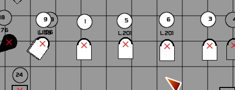

Table des matières
Light Plot: The integrated light plan
version 0.8.3
Light Plot is a light plan built into White Cat.
What Light Plot can Do
- to create a lighting plan that is easily searchable and editable in White Cat
- to display in a 2D synthetic, the location of devices, their connections, and their states
- linked dynamically (selection, channel states, lists of names of channels, patch) to the internal data storage in White Cat
- to export a summary of device location and a list of devices and gelatins used
- to export a bitmap image of the plan itself
The goal of Light Plot is to be simple and effective.
What It does not Do
- import plans dwg, dxf and other formats such as Autocad
- import external symbol libraries
- export in a vector format
- zoom in on the plan
To open Light Plot, open [Menus] by clicking the [Menus] button or by right clicking and then selecting [Light Plot] or by

Window layout
The window looks like this:
- General Options are on the top bar
- Menu editing on the side, which changes depending on which layer of the plan (background, shapes, symbols, legend) we are working on
- the plan itself, whose display depends on the size of the Light Plot window.

Arrangement of layers
The plan is an abstract space composed of several layers.
There is an infinite amount of space.
One can navigate through the space of the plan via the ViewPort X and Y.
This principle of layers can be compared to layers of tracing paper laid on top of each other so that you can see through.
The layers are arranged as in the picture below, so that the highest numbered layer is the uppermost:
[Symbols]
- 4 layers of symbols (projectors, floor stands and other details)
[Shapes]
- Layer of geometric shapes used to mark things (centerline and setting line and grid pipes) and various object types like curtains and other decor
[Background]
- a grid to show the hanging positions
- a background image of the theater showing as much of the scenery, audience seating and furniture as you want to display in the finished plan

Menu Top Bar

It is located at the top of the window and includes:
- the edit button ON/OFF of the plan (controls ability to make changes)
- the layer navigation buttons to move among the 4 symbol layers
- the display mode button to see the other categories of layers (background, symbol etc)
- ViewPort button that turns ON/OFF the movement of the viewing window
- Selection to display intensity levels from Stage or Blind or Faders
- The utility to export the plan view
Edit
When Edit is ON, you can move the symbols on the plan, change their properties and any other element of the overall plan. The Legend disappears from the sidebar and is replaced by the editing tools of the plan. In the legend you can see a summary of the number of projectors and other devices used on visible layers.
- Click [EDIT] to toggle between enable and disable
Display modes

There are 5 types of menus in Light Plot, whose selection changes the display on the left of the plan:
- Background mode, which allows you to insert and resize an image below the light plane (plan view of the device locations)
- Shapes mode, which allows you to draw lines, marks, symbols for decoration, plan views of hanging scenery
- Symbols mode, which allows you to edit the lighting plan (location and properties of the projectors and other devices)
- Legend mode, which displays the count of the contents of a plan (number of each type of device, Gels used)
- The Plot mode, which is a plan view without the sidebar
To change the display mode, click this button.
If you want to delete a section of the plan (Background, Shapes and Symbols):
- Press [F4] or click [CLEAR]
- Click the mode button that displays what you want to clear
If for example you are in [SHAPES] you will erase the entire contents of [SHAPES], but not the background plan, nor the 4 layers of symbols.
Symbols Layer
As is usual the 4 layers [Symbols] which we will need the most are directly accessible from the top menu bar.
These four layers are drawn one after another over the background and shapes.
Each of these layers may include 127 symbols.
To make a layer visible, select it from the first line of square boxes.
When a layer is visible, it is displayed in orange.

To edit a layer, the black editing box should be positioned under the layer selection box:
- select the box immediately below the layer box that you want to edit. This is the second row of boxes, and the one selected will become black.
You can use layers in two ways:
- as real layers: one dedicated to the grid positions, one layer for the balcony rail positions, one for the perches and box booms, and another for the floor mounted lights. You activate, deactivate the display of layers depending on your needs.
- as setups for different events: each layer or set of layers may be a different scene (or different performance event).
The last square on the right selects layer visibility to be either solo or multi-layer.
The single player mode:

Multi-layer mode:
ViewPort button
It allows you to navigate anywhere on the entire plan.
When it is active and you click and drag with the mouse on the plan, the view window of the plan changes:

The coordinates of the current position will change.
We must consider the viewing window in LightPlot as a kind of magnifying glass (that does not magnify), looking over a much larger plan or imagine you are looking at the bottom of a pool of water through a clear drinking glass or air mattress. The plan is the bottom of the pool, and the ViewPort window is the transparent glass or air mattress.
When you move the mattress, you see another part of the plan.
Using ViewPort, you move the viewing window, not the plan, or its symbols

There are several ways to manipulate the position of the viewport starting with ViewPort being disabled:
- Right-click and drag (this temporarily actives viewport as long as the right mouse button is held down) to allow its position to be changed. Be aware that right-clicking also causes the automatic deselection of any symbols and shapes selected.
- If you do not want to deselect those symbols, you can click the button [ViewPort] to activate it or activate it by pressing the [²] key (that's the tilde key [~] on the English keyboard) and then you can left click and drag in an empty space and the viewport, not symbols, will be moved. When you are done, ViewPort will continue to be activated until you manually change it.
To clear the Viewport and return it to the default position of X 0 Y 0:
- click [CLEAR] or press [F4]
- click the Viewport button
Exporting the integrated light plan
EXPORT VIEW AS button
The Export button exports the current view of the ViewPort as a jpg image
You can choose to save multiple captures of your window plan any way you’d like. You can display layers or not, you can create a segmented plan that shows 3 views of the grid (near, middle and far) or a view of the high grid and then a balcony rail view, etc etc …
These files are saved as JPG images in the import_export folder of White Cat:
- press [F5] or click [Name] and enter your name for the view
- click the blue name box to transfer your name there ( extension. jpg is added automatically )

- click [EXPORT VIEW AS] to generate the view.
Exported views include everything visible in the window, including the legend.

You will find your different exports in White_Cat/import_export

The plan
Background Mode

It is in this section where you can:
- import a plan of the theater
- adjust the size of your screen
- put the plan to scale
Uploading the plan of a theater
Consider carefully what should be included on this plan, as you may want to have more than one so that you can substitute one for another being careful to place and scale them the same way:
- One might include scenery and furniture (which you use when placing the lights)
- One might only show the upper grid and anything else you want on the final print
- One might show the Balcony Rail and floor positions
- On a multi-scene show where the scenery changes, you might have one for each Scene
You can upload only images of type jpg, tga, bmp or png
Place your theatre plans in White Cat /plans.

When you reopen White Cat (or refresh with [Rescan]) your plan of the theater will appear in the list of plans.

When you click on a file, it is loaded in the background:

Third party software to convert image formats
White Cat remains a lighting control software, before it became a plan editor for lights. It is up to you to change the plans you receive into a format readable by White Cat.
There are many free software programs that can retrieve an image from a pdf or DXF vector file.
Extract a plan from a pdf document
Foxit reader is a small pdf reader which can replace Adobe Reader as it is lightweight, simple and ultra powerful. There are two free versions: one as an installer, the other in a zip file (which can run from a usb flash drive).
- Once installed, launch the program, open the pdf of your seating plan
- Select the camera
- Click on the plan and drag your selection
- The selection is copied to the Windows clipboard
- Open a free software image manipulation (GIMP, FastStone Image Viewer or Irfan viewer, or even PaintBrush)
- Use Ctrl-V. The clipboard is copied to the image program, you can now save as jpg or bmp. Avoid as much as possible the png and jpeg compression on high.
My preference for image editing is the FastStone Image Viewer , fast, powerful, ultra stable. Functions for crop, contrast, desaturation are sufficient for most plans.
If you need to erase elements, use Gimp or any other photo editing program.
Convert DXF files from Autocad
There are many small programs, like Free DWG Viewer or converters http://anydwg.com/dxf-to-bmp-ex.html that allow you to export the dxf plan you received as a jpg or bmp.
Editing your background (background)
You can manipulate the following parameters:
- the position of the plan in the X and Y
- its size in X and Y
- rotation
- transparency (alpha)
- the calibration grid that will mark your size to edit the plan
Edit the position and scale
This information is given in pixels:
- Type a number (500)
- Click the box
or:
- Click in the box (it turns orange)
- Click and drag up or down with the mouse to adjust the size or position
Lock function
The small square keeps the aspect ratio (Scale X and Y) in the same relationship when you edit by dragging the mouse.
To remove the link, click the red square (it will turn gray and changing X will not now also change Y).

Editing the Grid

We are not talking about the pipe grid on which the instruments hang but instead this is a checkerboard of boxes drawn like the lines on graph paper.
When clicking the grid checkbox, you change the number of grid squares (0/25/50/75/100/125/150/175/200) placed on the plan.
This scale is given in pixels.
You are free to interpret what each square represents: this grid can provide a user defined scale that can be explained in the legend.
Each tile is a standard that you define yourself, it is a convention that you put in place: 1 = 1m tile or tile = 50cm, or 1 = 2 ft etc etc … Using a standard square, you provide those who will read your plan a simple and clear method, without having to use a scale ruler.
So you choose some drawing element of a size that you know, usually drawn in a place where it won't print.
You can toggle between the display of the full grid line (Line) or small dots (Dots).
A small slider adjusts the opacity of the grid. Fading down the grid somewhat will help you to see the devices that you place more clearly.
Plot Options window
Window Size

Here is where you can change the window size for Light Plot:
- Type a number of pixels
- Click the box size (X or Y)
or:
- Click on the box
- Hold down the mouse button and drag the window up or down
Window size allows you to prepare your workspace to your liking.
When exporting, this is what will be displayed in the window that is exported .
Change the fill color and line color
You can change the fill color (BckCol) and line color of the symbols and the grid lines of the plan (LineCol).
This change is made on a grayscale from white to black.
Click on a color box, drag the mouse up or down. This changes the background color that surrounds your background image.


Shapes Mode

[Shapes] and [Symbols] are much more advanced than [Background].
On these layers you can place objects with specific properties.
You have several families of geometric objects (Shapes) that you can insert in the plan:
- Curtain (Curtain)
- Solid line (Line)
- 5 types of dotted lines (stippled line)
- Rectangle (Rectangle)
- Circle (Circle)
- Pie shape (Circle Slice)
- Regular polygon of from 3 to 20 sides (Polygon)
- Text objects of up to 24 characters
Each object has special properties that you can edit.
Insert an object
- Navigate using the up/down arrows to select the shape you want.
- Click [Add to Plot] to insert it into the plan.
Note that when you change the type of object, different options appear:
| Object | General option | Particular option 1 | Particular option 2 | Particular option 3 |
| curtain | The overall size of the radius of the circle | Colors | ||
| solid line | Overall size: thickness | Colors | ||
| dotted line | Overall size: thickness | Colors | ||
| rectangle | The overall size | Colors | X multiply the proportion that the overall size | Y multiply the proportion that the overall size |
| circle | The overall size | Colors | ||
| pie section | The overall size | Colors | The opening angle | |
| polygon | The overall size of the radius | Colors | the number of edges | |
| text | - | The text pattern (size and color) |
- rotation
- size
- particular options displayed (see below)
The object appears in orange when selected.

You can create up to 126 objects per layer.
Select objects on the plan
- Click the small red target drawn on the center or at the beginning of the object.
- The selected object appears in orange.
- If the object is not easily catchable, or it is hidden under another symbol, type the ID number and click [Select ID].
- In the case of curtains and lines, if you click at the square end by mistake, you will edit the length and/or orientation of the symbol.
- To deselect, re-click the object, or right-click or press [ESC], which deselects all objects.
Edit the values of the object
When you select one or more objects, their properties are shown in the edit window.
Changing a value, or the type of object will modify the selected objects.
To edit specific values
- Type a number and click the box
OR
- Click the box and drag up or down (rectangle size xy, pie shape opening angle)
Manipulation of objects
Move the selected objects
- Select the objects
- Click on a blank area of the plan and drag the selection.
DUB
Allows you to copy (duplicate) a selection of objects and then pastes them on the plan, slightly offset from the original.
Delete
Remove the selected objects from the plan.
Unselect
Deselects selected objects. Can also be done with the [ESCAPE].
Down
Moves the selected object Down one level in the order of appearance. When you insert an object in the plan, the first inserted object will be drawn, then the second, then the third, etc … This means that sometimes you need to move the order of the objects.
Top
Put at the top of the stack of objects.
Group / Ungroup
You may need to group objects shapes, allowing you to create a unit that can be selected with one click and then moved together as if it were one object

The group option does not change the size or rotation of multiple objects in relative terms. It is simply a convenience for selection / deselection.
AlignX


Aligns the center of all symbols selected on the same vertical line (all will have the same X coordinate—which will make them line up with the furthest left symbol)
AlignY


Aligns the center of all symbols selected on the same Y axis (horizontal—which gives them all the same Y coordinate lined up with the uppermost symbol).
<-X->


Evenly divide the symbols on the horizontal X axis with the first and last ones being the anchor points.
<-Y->
Evenly divide the symbols on the vertical Y axis with the top and bottom being the anchor points.
Show Symbol ID
This box allows you to see the ID number of the symbol, numbered in the order of creation.
Mainly this is provided as a matter of convenience when using [Down] and [Top] to move objects that are difficult to select because they are hidden.
Shape attributes

This box allows you to enter some descriptive text for each shape on the plan.
It can also edit the text object.
Edit the text:
- Select symbols
- Press [F5] to turn on the digital input text entry (Name box)
- Type your description
- Click the text box of your object
This description is the only attribute that you can edit for each shape (unlike symbols for projectors and other devices, where you are provided with much more).
A small area of adjustment from the default coordinates is possible, so as to move the position of the text relative to the Shape.
- select the Shape
- Click on the Tracking space
- Drag as desired and movements made in the tracting space are echoed to the shape description text in the plan
Symbols Mode

Symbol Selector

- Light Plot has a library of symbols that are encoded in the heart of White Cat.
- The user cannot edit the shapes, colors, or import external symbols.
- However: you can edit the size of the general library [Global Size].
- Or edit the name and size of each symbol [Symbol Size].
This information will be displayed in the legend and allow you to rename each symbol shape. So you can choose the symbol corresponding to the cuts 713SX (that you do not use) and assign it to Levrons. You give it the name “Levron short” and you can change its size to be more-or-less correct in relation to the scale of your drawing.
- To navigate through the possible symbols, use the small arrows on the left side.
- To add a symbol to the layer, please click [ADD to Plot]]
- To edit a symbol already on the plan, select it, and then navigate to the symbols box and make changes
To edit the overall size of the library:
- Click [EDIT the SYMBOL]
- Vary the size of [Global Size] drag the horizontal potentiometer with the mouse .
To edit a symbol

- Click [EDIT the SYMBOL]
- Vary the size of [Symbol Size] while dragging the horizontal potentiometer.
- Name the symbol: Press [F5] to turn on the digital input text, type the new name, and click the text box of symbol.
Symbol library is saved in each show folder. It is not saved for the software as a whole (not saved for other shows).
List of symbols
From left to right:

- PC 650w, 1kw, 2kw
- Fresnel 1kw, 2kw, 5kw
- Ellipsoidal SourceFour 30 40 et 50°
- Ellipsoidal 1kw 611SX 614SX 613SX
- Ellipsoidal 2kw 711SX 714SX 713SX
- PAR64 CP60 CP61 CP62 CP95
- PAR56 NSP MFL WFL
- Par32 Par20 Par16

- Cycliode 1kw
- Horizontal Flood 1kw
- Halogen Flood 500w
- BT250w
- BT500w
- T8 Striplight
- Blinder
- Svoboda Light Curtain
- ACL (aircraft landing light)
- Tube fluorescent 60cm
- Tube fluorescent 120cm
- Follow Spot 575w
- Follow Spot 1200w

- Video Projector 1
- Video Projector 2
- Carousel Slide Projector
- Overhead Projector
Accessories PC and Fresnels:
- BarnDoor
- TopHat
- Color Extender
- Color Scroller
- Louvers
Accessories for Ellipsoidals:
- Iris
- Gobo holder
- Dmx Shutter
- Motorized Mirror
- Smoke Machine
- Fog Machine
- Dimmer circuit ( x )
- Non Dim circuit ( d )
- Running Light ( s )

- Floor Plate
- Small Floor Stand
- Large Floor Stand
- Coupling pipe
- Light Ladder
- Bridge diam 50, 1m
- Bridge diam 50, 3m
- Bridge diam 50, connexion
- Bridge diam 30, 1m
- Bridge diam 30, 3m
- Bridge diam 30, connexion
Working with Symbols
Selection/Deselection
As with [SHAPES], you can select or deselect a symbol by a click on the red cross in the center .
The layer on which the symbol is located is automatically selected.
When a channel is assigned to a symbol, it is deselected, selected in connection with the selection of circuits (keystroke, mouse click).
- To deselect, re-click the symbol or right click anywhere
- Press the [ESC] key
Move one or more symbols
Click, hold and drag on a blank area, and any movement of the mouse will be passed on to the symbols selected.
The editing of symbols placed in the plan
The editor for the selected symbols on the active layer.
When a symbol is selected, it can be edited. You can select multiple symbols at the same time.

Rotation of Selected Symbols

You can use the potentiometer to vary the horizontal rotation, or use the 8 pre-rotations by clicking one of the rotation squares.
Working with selected symbols

DUB
Duplicates the selected symbols on the active layer with all of its attributes (orientation, device type, num. channel, gelatins and so forth)
DELETE
Deletes the selected symbols from the active layer
SEND TO (replaces the Unselect button of the Shapes layer)
When this mode is activated, you can send the selection to another layer.
- Activate [Send To]
- Click the box of the destination layer

DOWN
When you add symbols to a layer, they are stacked one on top of another.
Sometimes you will need to send a symbol down in the stack (the foot [floor stand] of a projector for example).

TOP
Sends the selected symbols to the top of the stack.
AlignX
Aligns the center of a selection of symbols on the same vertical X axis–aligning all with the one furthest left (17 in the below example).
Starting positions:
Results:
ALIGNY
Aligns the center of a selection of symbols on the same horizontal Y axis–aligning all with the uppermost one (which in the example above was 20).
<-X->
This is the even horizontal distribution (Spread) of symbols with the leftmost and rightmost symbols being the anchor points.
Starting Position:
Results:

<-Y->
This is the even distribution of symbols vertically with the topmost and bottommost symbol being the anchor points.
Edit attributes of a symbol
You can edit the attributes of each symbol:
- channel number
- description of the circuit, written back to the List
- 3 gel colors
- dimmer to which the symbol is connected
- the 4 notes

To display these attributes on the plan click the square to the left of each major attribute (Channel, Gel, Dimmer, …).
A full display is shown here:

Note that if the circuit, dimmer, or the number of gelatin is equal to 0, they are not displayed. A non-dimmed projector or a floor stand should be assigned to circuit 0.
The four notes provide more comprehensive information about the symbol:
- reminder of the dmx address of strobe circuits
- how it hangs on the bar (yoking)
- rotating gobo or not
- location on the grid
Edit Attributes
- Circuit numbers, gelatin, or dimmer: type number, please click the box
- Circuit and descriptive notes: call the [NAME] (F5), type the descriptive and click the box where the description goes
- References gelatins: click the brand of gelatin, which toggles between Lee, Rosco, GamColor and Apollo.
NB: for the United States, the brand Rosco E-Color uses the same numbering as LEE for colors 002-452. The LEE 700 series does not have an equivalent in E-Color.
Adjusting the display attributes
For reasons of layout, it is often necessary to need to move the symbol attributes (channel number, gelatins, description, dimmer).

You must first click the selection boxes to the properties you want to move.
Then click in the tracking space, the pink square on the right. This area can be considered as a joystick and can shift in one or more maneuvers the position of a property from its current position
Presets layout attributes
You can store 8 presets of positions attributes.
This allows you to have a shortcut for the attribute layout for projectors on the opposite side of stage, from the back, and so forth
- Select the symbol whose attributes position you wish to use as the template for the preset
- Press [F1]
- Click the preset box of your choice
To assign a selection of symbols this preset:
- Select the symbols
- Click the preset box
To clear a preset:
- Press [F4]
- Click the preset box
Handling the patch from the PLOT

Very simply, if your lighting plan is ready, you can patch your fixtures from Light Plot and forget everything that is involved in juggling numbers and help eliminate patch errors .

Link To Patch
Click Link To Patch at the bottom left of the Light Plot window to activate it and echo all channel/dimmer assignments made from now on to the Patch window. You can also turn this on from the Patch window. .

In this way you can create your patch from the plan.
Clear Patch
To start with all dimmers unpatched, click [ALL] and then [CLEAR].in the Patch window or click [CLEAR PATCH] in the Light Plot window.
Legend

[Legend] is used to create a legend with a list of devices and gelatins that you can export .
On the left side of the window you can enter the company name, the name of the Play and there are 16 more spaces for notes or any of the usual title block information. Press [F5] , type your text and click the text box of where you want to place it.
There is also a place where you can also specify the scale you use (A square = 1m).
You can click to toggle between a symbol list or o text list.
Gel colors are sorted by types of symbols (different devices often used different sizes of color).
Assignment of Plot Commands to Midi
A number of controls are assignable in midi. See Midi Configuration and Midi Assignments and the Chart of Midi Assignments.
- These commands can allow you to switch layers (display layers) and export plans (navigation symbols, editing symbols, settings, … Using presets formatting attributes and many other things).